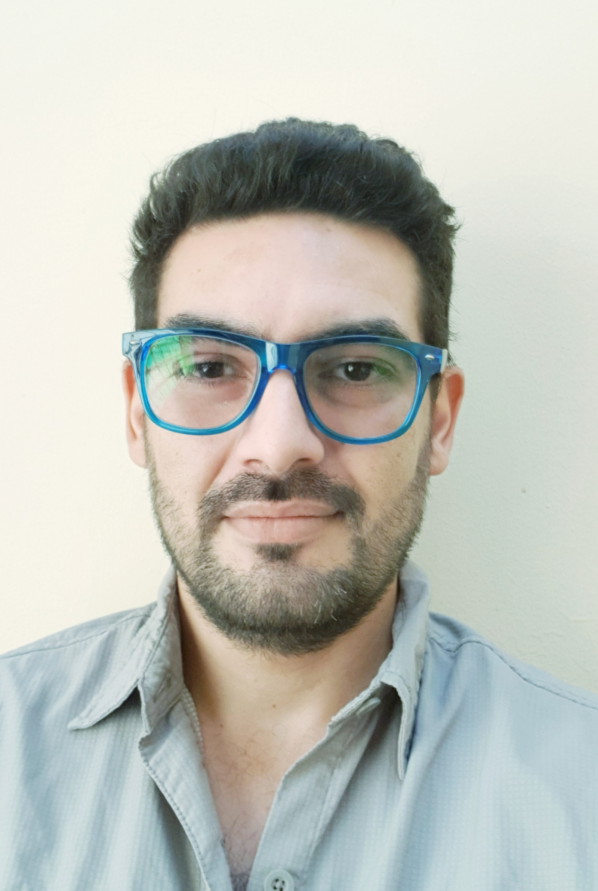

Ingeniero RF.
Habilidades: Tecnología TD-SCDMA, post proceso, pruebas de cobertura, auditoria de sitios, diseño de cobertura y parámetros lógicos del diseño de cobertura en Nicaragua.
Herramientas: Atoll, Mapinfo pro, Microsoft office, Xinwei drivetest Tool.
Team Leader- Consultor 2G/3G para initial Tuning project en Claro Nicaragua.
Habilidades: Ingeniero RF, Pos proceso, Drivetest, BTS hardware.
Herramientas: Winfiol, Exert, Aexio Xeus, Tems Investigation, Map Info, Actix Analyser, Microsoft Office.
Pos proceso de muestras, analista y optimización.
Habilidades: Analista de red, optimización a base de KPI y muestras recolectadas, GSM, WCDMA and LTE.
Herramientas: Actix Analyzer, Map Info, Aexio Xeus, Microsoft Office.
Data collector y Pos proceso
Habilidades: auditoria completa de sitios, recolección de datos GSM y WCDMA, analista de datos y optimización.
Herramientas: Actix Analyzer, Netimizer DMA, Netimizer DML, Tems investigation, Map info, Microsoft Office.
Ingeniería en electrónica y telecomunicaciones, Ingeniería industrial, Posgrado en planificación y administración de infraestructuras TI.
Bachiller en ciencias y letras.
Habilidad para trabajar en windows, linux, ios, photoshop, autocad, adobe fusión 360, unreal engine 4, fotografía, diseño 3D, diseño parametrico 3D, Impresion 3D, renderizado fotorrealista, reparación y modificación de computadoras, HTML y CSS.
